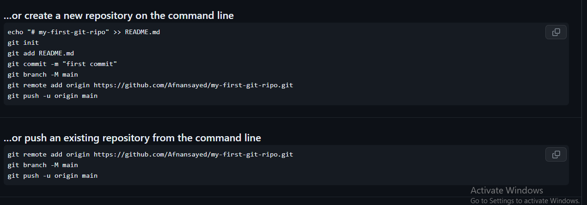

I want to test my git hub skill what I learned in "web-devlopment with jankawr Mahbub course"
If you can do this process successfully ,congratulation for creating a new github repository.
Now we are adding a vary important image of some command which is we always found when we create a new repository. This code will be giving by github so we don't need to remember.
